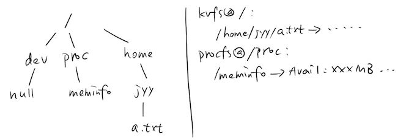
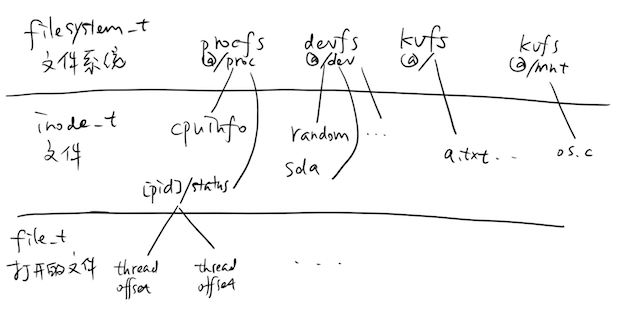

<html>
  <Head>
<meta http-equiv="Content-Type" content="text/html; charset=utf-8">

    
<link rel="stylesheet" href="../static/css/bootstrap.min.css"/>
<link rel="stylesheet" href="../static/css/bootstrap-theme.min.css"/>


    <link rel="stylesheet" href="../static/css/fonts/crmison.css"/>
    <link rel="stylesheet" href="../static/css/fonts/fira_code.css"/>
    <link rel="stylesheet" href="../static/css/fonts/ptsans.css"/>
    <link rel="stylesheet" href="../static/css/katex.min.css"/>
    <link rel="stylesheet" href="../static/css/wiki.css"/>
    <link rel="stylesheet" href="../static/css/codehilite.css"/>

    <script src="../static/js/jquery.min.js"></script>
    <script src="../static/js/bootstrap.bundle.min.js"></script>
    <script src="../static/js/katex.min.js"></script>
    
    

    <title>L2: 虚拟文件系统</title>
  </Head>
  <body>
   
   
<nav class="navbar fixed-top navbar-expand-lg navbar-dark bg-dark">
  <a class="navbar-barnd" href="index.html">Yanyan's Wiki</a>
  <div class="collapse navbar-collapse">
    <div class="navbar-nav">
      <a class="nav-item nav-link active" href="OS2020.html">
        
        操作系统 (2020)</a>
      <a class="nav-item nav-link active" href="SysLab2020.html">
        计算机系统综合实验 (2020)</a>
      <a class="nav-item nav-link active" href="ICS_NJU.html"> 加入我们</a>
    </div>
    <form class="form-inline" autocomplete="off">
      <input id="token-input" type="text" oninput="login();" maxlength="16"
        data-toggle="tooltip" data-placement="bottom"
        title="用于确定身份的作业提交 SHA-1 hash digest。更改后回车或刷新网页生效"></input>
    </form>
  </div>
</nav>

<center>
  <div class="article-container">
    <div class="article">
      <h1 id="l2">L2: 虚拟文件系统</h1>
<div class="fenced fenced-red">
<h4 id="2018624235959">截止日期：2018年6月24日23:59:59</h4>
<p>使用<code>make submit</code>提交。迟交罚分同Mini Labs。</p>
<p>注意本次实验沿用Lab1的代码，提交时请将Makefile中的提交目标从<code>L1</code>改为<code>L2</code>。</p>
</div>
<div class="fenced fenced-blue">
<h4 id="_1">概述</h4>
<p>在这个实验中，我们在Lab1代码的基础上实现文件系统的API：就是你熟悉的那些：<code>open</code>, <code>close</code>, <code>read</code>, <code>write</code>, ...，并且实现你们熟悉的文件系统：</p>
<ul>
<li>一个能有“目录结构”的文件系统，能够存储数据；</li>
<li>一个虚拟的procfs，包含系统信息；</li>
<li>一个虚拟的devfs，其中有一些设备的文件抽象。</li>
</ul>
</div>
<h3 id="_2">收到的作业</h3>
<p><table class="submissions"><tr><td></td><td></td><td></td><td></td><td></td><td></td><td></td></tr></table></p>
<h2 id="_3">背景</h2>
<p>在OS Lab1中，我们已经创造了操作系统最重要的基础：线程的管理、互斥和同步的机制——你已经制成了一个小型的嵌入式操作系统！在没有MMU的微型嵌入式系统中，只需要提供基础的多任务(甚至可能比分时多线程更简单，例如并发任务)和I/O支持，就能支持各类的应用程序。</p>
<p>在这个实验中，我们实现虚拟的文件系统的<strong>线程安全</strong>API，并且实现一些实际的文件系统。这样，并发系统中的多个线程就能通过文件系统API读写文件——至此我们离现代操作系统就只有一步之遥(下一个实验)：为每个线程创造它们独立的地址空间，就有了进程。</p>
<div class="fenced fenced-yellow">
<h4 id="lab1">什么？Lab1？</h4>
<p>我的Lab1好像运行不起来耶，那些API似乎还没调对，我只是交了个不怎么对的版本(和一本正经胡说八道的实验报告)给助教骗分了。</p>
<p>那你需要好好花点时间把你的Lab1调对。我们会检查<strong>你的代码是否和你的Lab1的Git记录一致</strong>。</p>
</div>
<h2 id="_4">虚拟文件系统</h2>
<p>在这个实验中，实现<code>vfs</code>模块：</p>
<div class="codehilite"><pre><span></span><span class="n">MODULE</span> <span class="p">{</span>
  <span class="kt">void</span> <span class="p">(</span><span class="o">*</span><span class="n">init</span><span class="p">)();</span>
  <span class="kt">int</span> <span class="p">(</span><span class="o">*</span><span class="n">access</span><span class="p">)(</span><span class="k">const</span> <span class="kt">char</span> <span class="o">*</span><span class="n">path</span><span class="p">,</span> <span class="kt">int</span> <span class="n">mode</span><span class="p">);</span>
  <span class="kt">int</span> <span class="p">(</span><span class="o">*</span><span class="n">mount</span><span class="p">)(</span><span class="k">const</span> <span class="kt">char</span> <span class="o">*</span><span class="n">path</span><span class="p">,</span> <span class="n">filesystem_t</span> <span class="o">*</span><span class="n">fs</span><span class="p">);</span>
  <span class="kt">int</span> <span class="p">(</span><span class="o">*</span><span class="n">unmount</span><span class="p">)(</span><span class="k">const</span> <span class="kt">char</span> <span class="o">*</span><span class="n">path</span><span class="p">);</span>
  <span class="kt">int</span> <span class="p">(</span><span class="o">*</span><span class="n">open</span><span class="p">)(</span><span class="k">const</span> <span class="kt">char</span> <span class="o">*</span><span class="n">path</span><span class="p">,</span> <span class="kt">int</span> <span class="n">flags</span><span class="p">);</span>
  <span class="kt">ssize_t</span> <span class="p">(</span><span class="o">*</span><span class="n">read</span><span class="p">)(</span><span class="kt">int</span> <span class="n">fd</span><span class="p">,</span> <span class="kt">void</span> <span class="o">*</span><span class="n">buf</span><span class="p">,</span> <span class="kt">size_t</span> <span class="n">nbyte</span><span class="p">);</span>
  <span class="kt">ssize_t</span> <span class="p">(</span><span class="o">*</span><span class="n">write</span><span class="p">)(</span><span class="kt">int</span> <span class="n">fd</span><span class="p">,</span> <span class="kt">void</span> <span class="o">*</span><span class="n">buf</span><span class="p">,</span> <span class="kt">size_t</span> <span class="n">nbyte</span><span class="p">);</span>
  <span class="kt">off_t</span> <span class="p">(</span><span class="o">*</span><span class="n">lseek</span><span class="p">)(</span><span class="kt">int</span> <span class="n">fd</span><span class="p">,</span> <span class="kt">off_t</span> <span class="n">offset</span><span class="p">,</span> <span class="kt">int</span> <span class="n">whence</span><span class="p">);</span>
  <span class="kt">int</span> <span class="p">(</span><span class="o">*</span><span class="n">close</span><span class="p">)(</span><span class="kt">int</span> <span class="n">fd</span><span class="p">);</span>
<span class="p">}</span> <span class="n">MOD_NAME</span><span class="p">(</span><span class="n">vfs</span><span class="p">);</span>
</pre></div>


<p>系统启动后，文件系统相关的代码将在操作系统中创建三个虚拟文件系统的实例：</p>
<ul>
<li>procfs，挂载在<code>/proc</code>。procfs中包含每个线程的统计信息，<code>cpuinfo</code>和<code>meminfo</code>，格式自定。</li>
<li>devfs，挂载在<code>/dev</code>。devfs中包含<code>random</code>, <code>zero</code>, <code>null</code>设备，你也可以增加任意你想支持的设备。</li>
<li>kvfs，挂载在<code>/</code>，支持用字符串文件名查找到对应的文件(文件系统想象成是一个<code>std::map&lt;std::string,std::string&gt;</code>)。</li>
</ul>
<p>其中，除<code>vfs-&gt;init()</code>是由操作系统启动代码调用外，其他代码均可以由任何线程并发调用。你需要为每个内核线程维护一定数量的文件描述符(例如16个)，每个线程执行<code>open</code>操作都会按顺序返回编号最小的空闲文件描述符。线程被初始创建时不拥有任何文件描述符。</p>
<p>虽然看起来我们的文件系统有“目录”的概念，但实际上文件系统只是一个从文件名到文件内容的映射——只是一个key-value mapping，完全不需要维护目录结构，如图所示：</p>
<p></p>
<p>通过<code>mount</code>，把一个文件系统“登记”到一个挂载点，例如把procfs挂载到<code>/proc</code>，之后在路径解析时，如果遇到以<code>/proc/</code>前缀开头的路径，则直接交给procfs解析即可。每个文件系统将实现自己的文件解析、文件的打开等操作。</p>
<div class="fenced fenced-red">
<h4 id="_5">提交与评分</h4>
<p>本次实验中我们不再使用默认的测试用例进行测试，我们要求每位同学<strong>编写测试用例</strong>，并且在实验报告中描述你的每个测试用例，以及用例的运行方式、测试通过的标准，助教会运行测试用例进行验证。</p>
<p>你需要实现一个测试<strong>框架</strong>：你可能需要多种类型的测试用例，从简单到复杂，简单的<a href="https://en.wikipedia.org/wiki/Smoke_testing_(software)">“冒烟”测试</a>用例帮助你迅速检查系统基本功能是否正常；更多的测试用例从各个方面测试你的实现，也帮助你调试文件系统中的问题。</p>
<p>测试用例的设计和通过占实验的绝大部分评分。</p>
</div>
<p>因为我们不再使用标准测试用例，你可以自行规定实现的程度，例如flags可以仅仅支持<code>O_RDONLY</code>, <code>O_WRONLY</code>和<code>O_RDWR</code>，但要获得全部成绩，必须实现前述的文件系统功能：<code>/proc/[pid]</code>下的线程统计信息、<code>/proc/cpuinfo</code>, <code>/proc/meminfo</code>、<code>/dev</code>下的三个设备和一个key-value文件系统(挂载在根<code>/</code>)。文件支持读写、lseek操作。<strong>你甚至都不需要按照实验指南中的方式实现虚拟文件系统</strong>——尽管那么做其实会让实现更容易一些。</p>
<div class="fenced fenced-green">
<h4 id="o_append">有兴趣实现<code>O_APPEND?</code></h4>
<p>在系统中可以有多个线程、多个进程独立地以<code>O_APPEND</code>方式打开一个文件，但无论多少进程打开，追加写总是原子的——不会出现一个进程的追加写覆盖另一个进程追加写的情况。也就是说，全局所有进程将共享一个offset，并且要保护好它的原子性。</p>
</div>
<h2 id="_6">实验指南</h2>
<h3 id="vfs">VFS中的对象</h3>
<p>VFS中有三类重要的对象，它们都用结构体实现(和Lab1中的<code>thread_t</code>类似)：</p>
<div class="codehilite"><pre><span></span><span class="k">typedef</span> <span class="k">struct</span> <span class="n">filesystem</span> <span class="n">filesystem_t</span><span class="p">;</span>
<span class="k">typedef</span> <span class="k">struct</span> <span class="n">inode</span> <span class="n">inode_t</span><span class="p">;</span>
<span class="k">typedef</span> <span class="k">struct</span> <span class="n">file</span> <span class="n">file_t</span><span class="p">;</span>
</pre></div>


<p>其中：</p>
<ul>
<li><code>filesystem_t</code>是一个“文件系统”，挂载的就是文件系统，从路径到inode的解析也是由文件系统最终完成的；</li>
<li><code>inode_t</code>是一个inode，系统中的每一个文件都对应着一个inode；</li>
<li><code>file_t</code>是一个打开的文件，注意系统中打开的文件不等于inode——多个进程/线程可能多次打开同一个文件，会得到不同的<code>file_t</code>；而在进程fork的时候，父子进程的文件描述符都指向同一个<code>file_t</code>。</li>
</ul>
<div class="fenced fenced-blue">
<h4 id="fork">fork后的文件描述符</h4>
<p>考虑如下最简单的代码：</p>
<div class="codehilite"><pre><span></span><span class="k">const</span> <span class="kt">char</span> <span class="o">*</span><span class="n">hello</span> <span class="o">=</span> <span class="s">&quot;Hello World</span><span class="se">\n</span><span class="s">&quot;</span><span class="p">;</span>
<span class="n">fork</span><span class="p">();</span>
<span class="n">write</span><span class="p">(</span><span class="n">STDOUT_FILENO</span><span class="p">,</span> <span class="n">hello</span><span class="p">,</span> <span class="n">strlen</span><span class="p">(</span><span class="n">hello</span><span class="p">));</span>
</pre></div>


<p>如果在终端中执行：</p>
<div class="codehilite"><pre><span></span>$ ./a.out &gt; log.txt
$ cat log.txt
Hello World
Hello World
</pre></div>


<p>你会不会诧异为什么两个write没有写到文件同一个偏移量里？这就是因为每一个文件描述符在操作系统里，都是一个指向<code>file_t</code>的指针，而<code>file_t</code>中维护了文件偏移量——这样父、子进程就实现了偏移量的共享。</p>
</div>
<p>总结来说，系统中的每个文件系统都对应了一个<code>filesystem_t</code>的对象，挂载到文件系统中的某个位置。通过这个对象，我们可以得到文件系统中的inodes (<code>inode_t</code>对象)，通过打开inode得到打开的文件(<code>file_t</code>对象)。</p>
<p></p>
<h3 id="c">C中的面向对象编程</h3>
<p>既然我们说文件系统、inode、打开的文件都是对象，那么自然也需要定义对这些对象的操作。我们以文件系统为例——文件系统为例，看看如何在C中实现面向对象编程。</p>
<div class="fenced fenced-red">
<h4 id="_7">这个设计不是唯一的</h4>
<p>我们给出了一些参考的类定义，但这个定义不是唯一(甚至也许不是正确)的。我们只是提供一些思路，我们希望实验者自己尝试对象API的设计。</p>
</div>
<p>首先我们定义<code>fsops_t</code>结构体：</p>
<div class="codehilite"><pre><span></span><span class="k">typedef</span> <span class="k">struct</span> <span class="n">fsops</span> <span class="p">{</span>
  <span class="kt">void</span> <span class="p">(</span><span class="o">*</span><span class="n">init</span><span class="p">)(</span><span class="k">struct</span> <span class="n">filesystem</span> <span class="o">*</span><span class="n">fs</span><span class="p">,</span> <span class="k">const</span> <span class="kt">char</span> <span class="o">*</span><span class="n">name</span><span class="p">,</span> <span class="n">inode_t</span> <span class="o">*</span><span class="n">dev</span><span class="p">);</span>
  <span class="n">inode_t</span> <span class="o">*</span><span class="p">(</span><span class="o">*</span><span class="n">lookup</span><span class="p">)(</span><span class="k">struct</span> <span class="n">filesystem</span> <span class="o">*</span><span class="n">fs</span><span class="p">,</span> <span class="k">const</span> <span class="kt">char</span> <span class="o">*</span><span class="n">path</span><span class="p">,</span> <span class="kt">int</span> <span class="n">flags</span><span class="p">);</span>
  <span class="kt">int</span> <span class="p">(</span><span class="o">*</span><span class="n">close</span><span class="p">)(</span><span class="n">inode_t</span> <span class="o">*</span><span class="n">inode</span><span class="p">);</span>
<span class="p">}</span> <span class="n">fsops_t</span><span class="p">;</span>
</pre></div>


<p>并且定义</p>
<div class="codehilite"><pre><span></span><span class="k">struct</span> <span class="n">filesystem</span> <span class="p">{</span>
  <span class="p">...</span>
  <span class="n">fsops_t</span> <span class="n">ops</span><span class="p">;</span>
  <span class="p">...</span>
<span class="p">};</span>
</pre></div>


<p>这样我们就能为一个文件系统实现一份代码，并且创建多个同一种文件系统的实例：</p>
<div class="codehilite"><pre><span></span><span class="n">filesystem_t</span> <span class="o">*</span><span class="nf">create_procfs</span><span class="p">()</span> <span class="p">{</span>
  <span class="n">filesystem_t</span> <span class="o">*</span><span class="n">fs</span> <span class="o">=</span> <span class="p">(</span><span class="n">filesystem_t</span> <span class="o">*</span><span class="p">)</span><span class="n">pmm</span><span class="o">-&gt;</span><span class="n">alloc</span><span class="p">(</span><span class="k">sizeof</span><span class="p">(</span><span class="n">filesystem_t</span><span class="p">));</span>
  <span class="k">if</span> <span class="p">(</span><span class="o">!</span><span class="n">fs</span><span class="p">)</span> <span class="n">panic</span><span class="p">(</span><span class="s">&quot;fs allocation failed&quot;</span><span class="p">);</span>
  <span class="n">fs</span><span class="o">-&gt;</span><span class="n">ops</span> <span class="o">=</span> <span class="o">&amp;</span><span class="n">procfs_ops</span><span class="p">;</span> <span class="c1">// 你为procfs定义的fsops_t，包含函数的实现</span>
  <span class="n">fs</span><span class="o">-&gt;</span><span class="n">ops</span><span class="o">-&gt;</span><span class="n">init</span><span class="p">(</span><span class="n">fs</span><span class="p">,</span> <span class="s">&quot;procfs&quot;</span><span class="p">,</span> <span class="nb">NULL</span><span class="p">);</span>
  <span class="k">return</span> <span class="n">fs</span><span class="p">;</span>
<span class="p">}</span>
</pre></div>


<p>然后用</p>
<div class="codehilite"><pre><span></span><span class="n">vfs</span><span class="o">-&gt;</span><span class="n">mount</span><span class="p">(</span><span class="s">&quot;/proc&quot;</span><span class="p">,</span> <span class="n">create_procfs</span><span class="p">());</span>
</pre></div>


<p>实现文件系统的挂载。</p>
<h3 id="_8">文件系统的挂载</h3>
<p>文件系统的挂载其实非常简单——就是在系统里“登记”一下把某个<code>filesystem_t</code>挂载到了某个路径。</p>
<p>注意路径解析只在这两个API中发生：</p>
<div class="codehilite"><pre><span></span><span class="kt">int</span> <span class="p">(</span><span class="o">*</span><span class="n">access</span><span class="p">)(</span><span class="k">const</span> <span class="kt">char</span> <span class="o">*</span><span class="n">path</span><span class="p">,</span> <span class="kt">int</span> <span class="n">mode</span><span class="p">);</span>
<span class="kt">int</span> <span class="p">(</span><span class="o">*</span><span class="n">open</span><span class="p">)(</span><span class="k">const</span> <span class="kt">char</span> <span class="o">*</span><span class="n">path</span><span class="p">,</span> <span class="kt">int</span> <span class="n">flags</span><span class="p">);</span>
</pre></div>


<p>简单来说，只要在解析<code>path</code>参数时，找到它所对应的挂载点，然后把剩下的路径交给文件系统(<code>filesystem_t</code>对象)解析即可。</p>
<h3 id="_9">文件操作</h3>
<p>类似地，我们也可以定义</p>
<div class="codehilite"><pre><span></span><span class="k">typedef</span> <span class="k">struct</span> <span class="n">fileops</span> <span class="p">{</span>
  <span class="kt">int</span> <span class="p">(</span><span class="o">*</span><span class="n">open</span><span class="p">)(</span><span class="n">inode_t</span> <span class="o">*</span><span class="n">inode</span><span class="p">,</span> <span class="n">file_t</span> <span class="o">*</span><span class="n">file</span><span class="p">,</span> <span class="kt">int</span> <span class="n">flags</span><span class="p">);</span>
  <span class="kt">ssize_t</span> <span class="p">(</span><span class="o">*</span><span class="n">read</span><span class="p">)(</span><span class="n">inode_t</span> <span class="o">*</span><span class="n">inode</span><span class="p">,</span> <span class="n">file_t</span> <span class="o">*</span><span class="n">file</span><span class="p">,</span> <span class="kt">char</span> <span class="o">*</span><span class="n">buf</span><span class="p">,</span> <span class="kt">size_t</span> <span class="n">size</span><span class="p">);</span>
  <span class="kt">ssize_t</span> <span class="p">(</span><span class="o">*</span><span class="n">write</span><span class="p">)(</span><span class="n">inode_t</span> <span class="o">*</span><span class="n">inode</span><span class="p">,</span> <span class="n">file_t</span> <span class="o">*</span><span class="n">file</span><span class="p">,</span> <span class="k">const</span> <span class="kt">char</span> <span class="o">*</span><span class="n">buf</span><span class="p">,</span> <span class="kt">size_t</span> <span class="n">size</span><span class="p">);</span>
  <span class="kt">off_t</span> <span class="p">(</span><span class="o">*</span><span class="n">lseek</span><span class="p">)(</span><span class="n">inode_t</span> <span class="o">*</span><span class="n">inode</span><span class="p">,</span> <span class="n">file_t</span> <span class="o">*</span><span class="n">file</span><span class="p">,</span> <span class="kt">off_t</span> <span class="n">offset</span><span class="p">,</span> <span class="kt">int</span> <span class="n">whence</span><span class="p">);</span>
<span class="p">}</span> <span class="n">fileops_t</span><span class="p">;</span>
</pre></div>


<p>实现各种文件代码的复用，例如procfs中的大部分文件其实都是一块临时的数据(分配在内存中)，所以可以用同一套read/write/lseek实现。嗯，操作系统就是个C程序嘛！不过如此，这个实验其实就是一些实现代码的体力活哦……</p>
<div class="fenced fenced-blue">
<h4 id="_10">不要高兴得太早：线程安全</h4>
<p>不要忘记了，文件系统的实现需要线程安全。如果你觉得用自旋锁就万事大吉了——考虑一下如果文件的读取通过DMA磁盘，DMA通过中断通知的话……</p>
<p>用个信号量能部分解决这个问题，但要把线程安全实现好并不是一个简单的问题。抽象地来看，文件系统不过是一个支持各种操作的数据结构，因此每个操作执行的语义也是完全确定的——并发的文件系统调用也很自然应当满足这个顺序语义，即“任何并发的执行的结果，都等价于某个串行执行的结果”，也就是著名的“<a href="https://en.wikipedia.org/wiki/Serializability">可串行化(serializability)</a>”</p>
</div>
<div class="fenced fenced-green">
<h4 id="_11">我们离一个完整的操作系统有多近？</h4>
<p>现在我们已经有了可以打开、关闭、读写文件的线程，线程又可以创建和管理其他线程。很自然，文件描述符就是线程的一种资源。同理，我们可以给线程增加任意的资源，比如一个独立的地址空间，并且运行一个用户态的程序。哈！这样就有了进程了。进程在进行系统调用时，同样由<code>os-&gt;interrupt</code>捕获进行处理，你也许已经想好fork, execve, exit的实现了……</p>
</div>
    </div>
  </div>
</center>

<div class="footer-bottom">
  <center>
    <div class="copyright"> © 2020 Yanyan Jiang, All rights reserved </div>
  </center>
</div>


    <script>
      $(function () {
        $('[data-toggle="tooltip"]').tooltip()
      })

      $("math").each(function() {
        var tex = $(this).text();
        var html = katex.renderToString(tex, {
          displayMode: $(this).attr('class') == 'block-math',
          throwOnError: false
        });
        $(this).replaceWith(html);
      });

      function get_token() {
        var match = document.cookie.match(new RegExp('(^| )token=([^;]+)'));
        if (match) return match[2];
        else return "";
      }

      var token = get_token();
      var hint = "token", box = $("#token-input");

      if (token == "") { box.val(hint); }
      else { box.val(token); }

      function login() {
        var token = box.val()
        document.cookie = 'token=' + token + '; expires=Fri, 31 Dec 9999 23:59:59 GMT;';
        if (token == '') {
          box.val(hint);
        }
      }
    </script>
  </body>
</html>